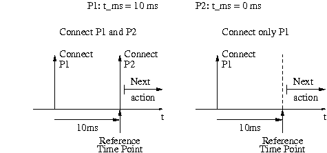
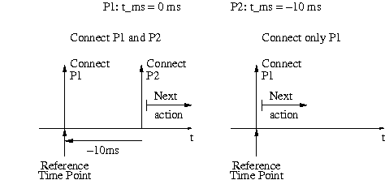
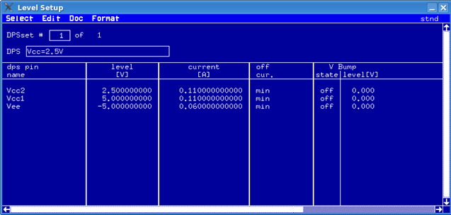
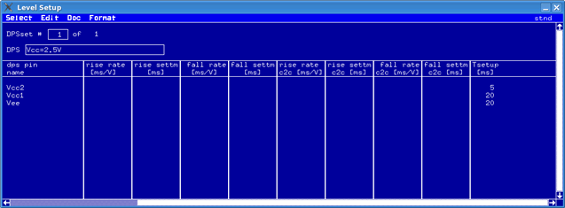

DPS pins with connect setup time
The connect setup time is the delay from the connect of a pin to a common reference time point. The connect sequence of several pins starts with the connect of the pin with the highest setup time and ends after the connect of the pin with the lowest setup time or after the reference time point, whichever comes later.
The setup times can be positive or negative and the delay from the connect of pin P1 to the connect of pin P2 is always
Tsetup(P1) - Tsetup(P2).
Specifying a negative connect setup time means, that the connect happens after the reference time point. This can be used to avoid unwanted delays for the connect sequence if setup times between pins are required but the sequence should always end after the connect of the last pin, even if only a subset of pins is connected.
Connect sequence with positive connect setup times:

Connect sequence with negative connect setup times:

A "next action" could be, for example the start of the sequencer.
Pins are disconnected in the reverse connect order, but as fast as possible, without waiting for the connect setup times. The order of pins for level changes and set switching is undefined and not affected by the connect setup times.
For the execution order of mixed pins, i.e. pins with 'connect setup time' and pins with 'voltage ramps', see DPS pins with voltage ramps.
Example
Suppose you are testing a device which requires that no signals are applied to its pins before power is present. The device requires +5V (Vcc1), -5V (Vee) and +2.5V (Vcc2), where the +2.5V power has to be applied after the +5V power.
- In the Pin Configuration setup, define the Vcc2 pin first, then define the other supply pins
(Vcc1 and Vee).
The DPS starts to power up from the Vcc2 pin, according to the pin definition order.
- In the Level Setup window, in the Tsetup [ms] column, define the
setup time (wait time) for these supply pins, if you need more pronounced delays between the
supply pins.
To specify a delay interval of 15 ms between applying ±5V and +2.5V, and another interval between applying +2.5V and other signals, you must program the DPS connect setup time as in the figure below.


In short, the connect setup times you enter represent the timing sequence in which the power is turned on before the functional test is started!
Functional changes
- Introduced before SmarTest 6.3.2
- SmarTest 6.5.4: The slew rate parameters vout_rise_t_ms_per_volt, vout_rise_settling_t_ms, vout_fall_t_ms_per_volt and vout_fall_settling_t_ms are added in the Level setup tool.
- SmarTest 7.1.0: The slew rate parameters vout_rise_t_ms_per_volt_c2c, vout_rise_settling_t_ms_c2c, vout_fall_t_ms_per_volt_c2c and vout_fall_settling_t_ms_c2c are added in the Level setup tool.